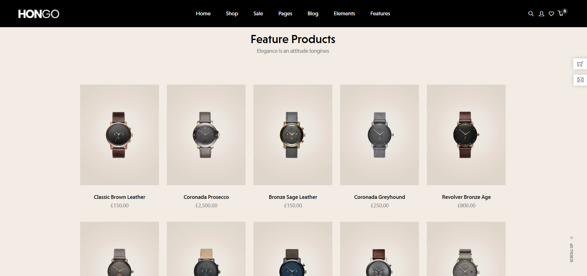
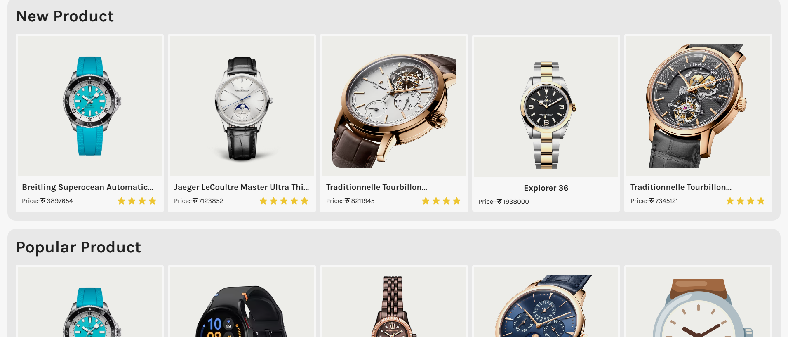
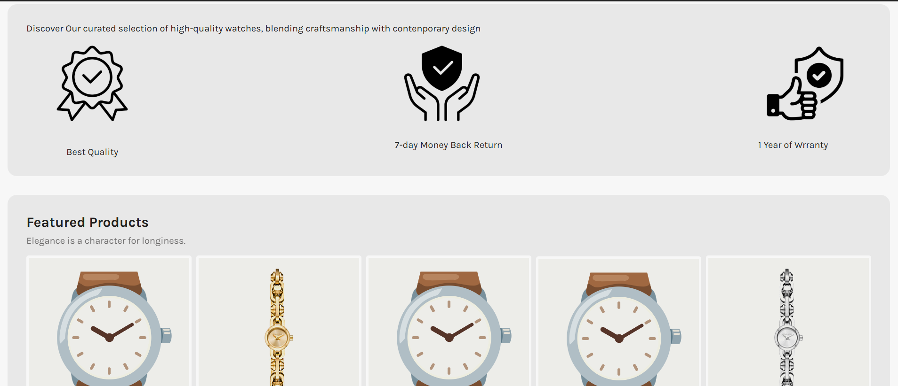
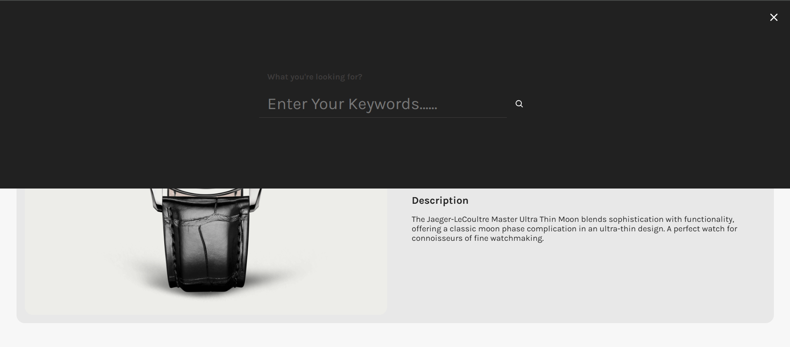

Reference for Navigation Bar

Our Navigation Bar
difference in our nav bar and reference nav bar The main difference between the two navigation bars is their menu structure and user actions. WE focused on research, products, and blogs. Both have search, user, and cart icons, but our nav bar includes a "Log In" text, whereas the reference nav bar has a Wishlist icon. Our design is similar, having a dark theme with a slight softer color.
Reference for Product Page
Our Product Page
Difference in our product page and reference product page In our product page, we have separated new and popular production showcase with an image slider of Most popular items. We’ve placed product rating which is not in reference page with overall design, color and UI differences from reference page.
Reference for Product Details Page

Our Product Details Page

Difference between product details and reference product details We have a noticeable difference in UI, design and user experience with content structure, some functionalities, picture of item and its description and color palette of our page than from the page from where we took reference.
Reference for Home Page

Our Home Page
Difference in Reference HOME PAGE and our home page The homepage we created for Samayeko Sansar is slightly different from the reference homepage in terms of UI, design and user interaction and color scheme. We also have icons and feature products highlighted with reviews from customers.
Reference for Search Bar

Our Search Bar
Difference between search bar and reference search bar Well, the search bar is somehow similar, but the background and color scheme and fonts differ from the original one.